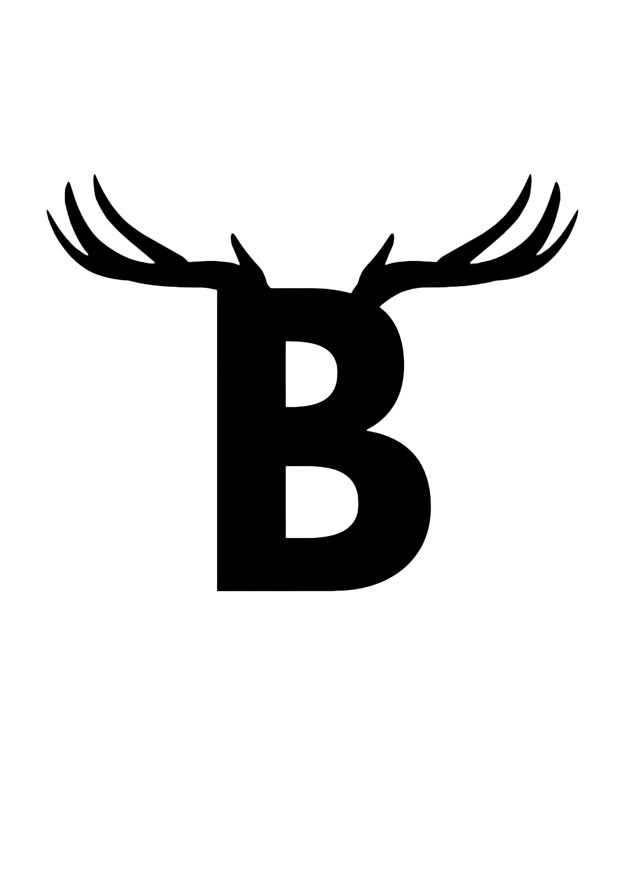

📸 @user000000
Tapšana : Sākumā es nezināju, kā veidošu savu masku, nebija labu ideju. Sarunās ar citiem nonācu līdz budēļiem, un tad arī pavērās idejas, kā to visu veidot. Manai maskai ir vairāki vēstījumi. Viens no tiem ir par tradīcijām. Tā atgādina, cik svarīgi ir saglabāt mūsu latviešu tradīcijas, jo tās veido Latviju par Latviju, bet mūs – par tautu. Otrs vēstījums ir par saikni ar dabu. Šī maska nav domāta, lai biedētu, bet gan lai parādītu, ka mēs visi esam daļa no dabas un ar to cieši saistīti. Vārds budēlis nozīmē ‘modināt, budināt, pamudināt’, un arī mana maska pamudina ieraudzīt mūsu latvisko esību.
📸 @user000000